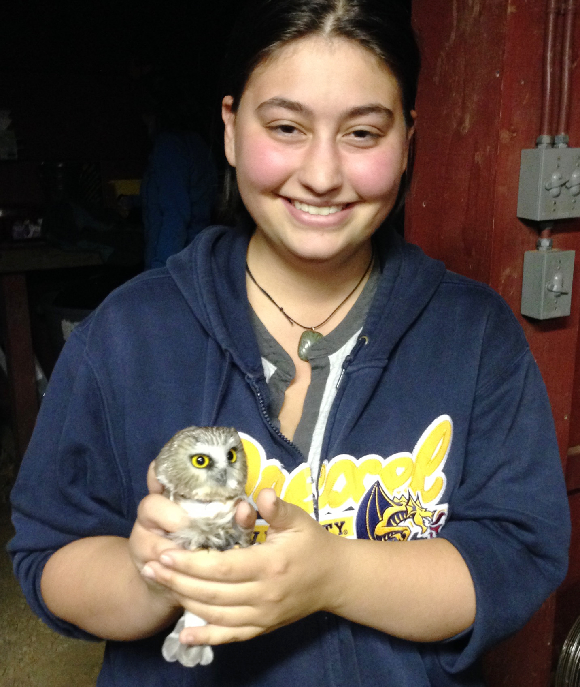

 Emily did her bachelors and masters degrees in an accelerated program at Drexel University. While her degrees were generally in Environmental Science, she initially did pine snake and terrapin conservation research with a lab based in the New Jersey pinelands. For her masters degree, she transitioned labs into the ornithology department at the Academy of Natural Sciences, working with Jason Weckstein and Nate Rice. While at the Academy, she worked on many projects. She started a long-term project monitoring avian diseases such as Lyme disease and avian malaria at a local bird banding station, managed the blood film collection, and contributed to specimen preparation. Her masters degree was on toucan biogeography using UCEs to infer past relationships. Emily is currently a second year Ph.D. student working with Rob Moyle at the University of Kansas. She has been working on quite a few phylogenetics projects while teaching, working with students, and assisting with collections management. Her current research interests include using phylogenetic data combined with other information, such as plumage differentiation or parasite interactions to learn about bird evolution.
University of Kansas